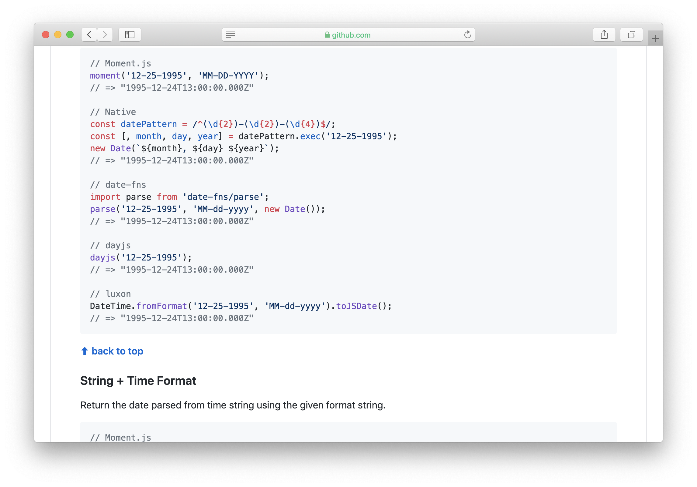

Why you should try Dart in 2019

Aleksei Zolotykh
Just Alex

We send a lot of messages
The most advanced JS conf in Russia
Dart is specifiacation
http://bit.do/dartspec-
Dart is...
- Dart -> Javascript or LLVM or Binary
- DartVM (V8)
All platforms
Web

Server
Mobile

JS + static types === Typescript
JS === Typescript
Attempt to change the world.
<!DOCTYPE html>
<html>
<body>
<script type="application/dart" src="app.dart"></script>
<!-- Support for non-Dart browsers. -->
<script src="packages/browser/dart.js"></script>
</body>
</html>
<!DOCTYPE html>
<html>
<body>
<script type="application/dart" src="app.dart"></script>
<!-- Support for non-Dart browsers. -->
<script src="packages/browser/dart.js"></script>
</body>
</html>
Why google wanted to kill JS?
- Syntax
- Legacy API
- SDK
- Design issues
- Static types *
Dart supports static types from version 2.0
Syntax
Javascript
var f1 = () => {...}
f1();
console.log('test');
f2();
var f2 = () => {...}
Javascript
var f1, f2;
f1 = () => {...}
f1();
console.log('test');
f2();
f2 = () => {...}
void f1(){}
void main() {
f1();
print('hello world');
f2();
}
void f2(){}
class Greeter {
greeting: string;
constructor(message: string) {
this.greeting = message;
}
greet() {
return "Hello, " + this.greeting;
}
}
let greeter = new Greeter("world")
class Greeter {
greeting: string;
constructor(message: string) {
this.greeting = message;
}
greet() {
return "Hello, " + this.greeting;
}
}
let greeter = new Greeter("world")
class Greeter {
greeting: string;
constructor(message: string) {
this.greeting = message;
}
greet() {
return "Hello, " + this.greeting;
}
}
let greeter = new Greeter("world")
class Greeter {
constructor(private greeting: string) {}
greet() {
return "Hello, " + this.greeting;
}
}
let greeter = new Greeter("world")
class Greeter {
constructor(private greeting: string) {}
greet() {
return "Hello, " + this.greeting;
}
}
let greeter = new Greeter("world")
class Greeter {
constructor(private greeting: string) {}
greet() {
return `Hello, ${this.greeting}`;
}
}
let greeter = new Greeter("world")
export class Greeter {
constructor(private greeting: string) {}
greet() {
return `Hello, ${this.greeting}`;
}
}
// another file
let greeter = new Greeter("world")
Dart
class Greeter {
final String _greeting;
Greeter(this._greeting);
String get greet => "Hello, $_greeting";
}
// another file
var greeter = Greeter("world");
class TestClass {
void method1(){...}
void method2(){...}
void method3(){...}
}
TestClass()
..method1()
..method2()
..method3()
['0']
..add(1)
..add(2)
..add(3)
Null-aware Operator "??"
exp ?? otherExp
((x) => x == null ? otherExp : x)(exp)
Null-aware Operator "??="
obj ??= value
((x) => x == null ? obj = value : x)(obj)
Null-aware Operator "?."
obj?.method()
((x) => x == null ? null : x.method())(obj)
// undefined is not a function
obj?.child?.child?.getter
Spread is also here
var list = [1, 2, 3];
var list2 = [0, ...list];
assert(list2.length == 4);
If list is null
var list;
var list2 = [0, ...?list];
assert(list2.length == 1);
Collection if
var nav = [
'Home',
'Furniture',
'Plants',
if (promoActive) 'Outlet'
];
collection for
var listOfInts = [1, 2, 3];
var listOfStrings = [
'#0',
for (var i in listOfInts) '#$i'
];
assert(listOfStrings[1] == '#1');
Legacy API
Does it work?
Does it work?
What does this do?
function f(foo, values) {
with (foo) {
console.log(values);
}
}
What if foo has "values"?

SDK
const result = document.getElementsByClassName('test');
// HTMLCollection
const result = document.querySelectorAll('.test');
// NodeList
Why it is not an array?
const nodelist = document.querySelectorAll(‘.divy’)
const divyArray = Array.from(nodelist)
Array is also a strange thing
Array.prototype[1] = "ha";
var arr = [0, /* Hole */, 1]
arr[1] // => "ha"
But we have map, filter...
Moment.js
Moment.js

void main(){
final date = DateTime.now();
final berlinWallFell = new DateTime(1989, 11, 9);
final diff = date.difference(berlinWallFell);
print('${diff.inDays} days');
}
void main(){
final date = DateTime.now();
final berlinWallFell = new DateTime(1989, 11, 9);
final Duration diff = date.difference(berlinWallFell);
print('${diff.inDays} days');
}
Promise => Future
import 'dart:async';
Future<void> main() async {
print(await asyncOperation());
}
Future<String> asyncOperation() =>
Future.delayed(
Duration(seconds: 1),
() => 'hello',
);
import 'dart:html';
void main() {
var button = querySelector('button');
// `onClick` is a Stream<T> instance that receives user click data events
button.onClick.listen((_) => print('Button clicked!'));
}
Stream<R> cast<R>();
Stream<S> expand<S>(Iterable<S> Function(T element) convert);
Stream<S> map<S>(S Function(T event) convert);
Stream<R> retype<R>();
Stream<T> skip(int count);
Stream<T> skipWhile(bool Function(T element) test);
Stream<T> take(int count);
Stream<T> takeWhile(bool Function(T element) test);
Stream<T> where(bool Function(T event) test);
Stream<S> transform<S>(StreamTransformer<T, S> streamTransformer);
Stream<T> handleError(Function onError, {bool test(error)});
@Component(
selector: 'hero-search',
)
class HeroSearchComponent {
...
Stream<List<Hero>> heroes;
StreamController<String> _searchTerms = StreamController<String>.broadcast();
...
}
- dart:async
- dart:collection
- dart:convert
- dart:core
- dart:developer
- dart:html
- dart:indexed_db
- dart:js
- dart:js_util
- dart:math
- dart:svg
- dart:typed_data
- dart:web_audio
- dart:web_gl
- dart:web_sql
- dart:cli
- dart:io
- dart:isolate
- dart:mirrors
— SDK is JS in your browser (demo)
Design problems
Typescript
class Animal2 { public name: string; }
function doSomethigWithAnimal(_animal: Animal2){ ... }
const a = { name: 'test' }
delete a.name;
doSomethigWithAnimal(a);
Static types
Benefits
- Syntax
- API
- Migration to new version
- Great design
- A lot of features from the box
Problems
- We need more Dart developers
- We need more tools
- We need more libs
- Works for prototyping for mobile devices
- Works for lagre and medium SPA applications
Why you should try Dart in 2019
Alex Zolotykh
twitter: @lex0zaa